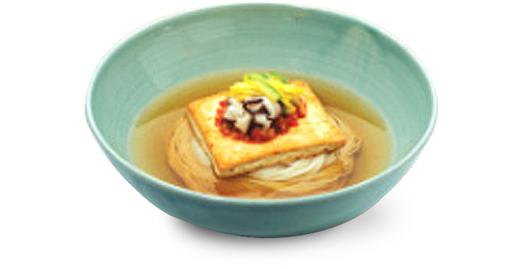
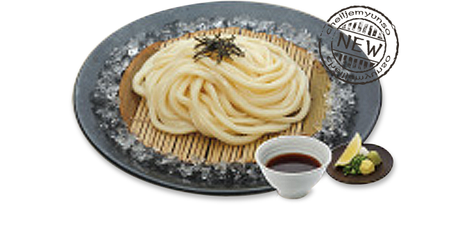
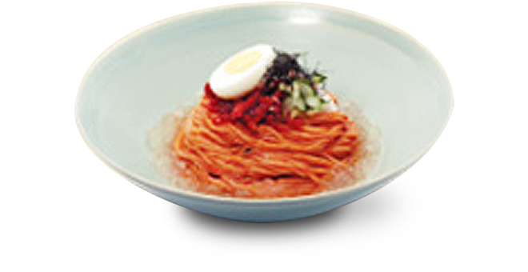
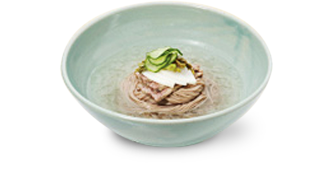

- 제일 우동 Hot Noodle with Selected Seaweed & Smoked Tuna Broth
-

- 7,500원
-

엄선된 다시마와 훈연 가다랑어포 등으로 매일 아침 정성껏 우려내어 깊고 풍부한 국물과 유부 고명을 함께 맛 볼 수 있는 메뉴
- 잔치 소면 Hot Noodle with Korean Dried Anchovy Broth
-
- 8,000원
-

1등급 백설 밀가루로 정성껏 만들어 부드럽고 쫄깃한 제일제면소 소면과 남해 멸치로 우려내어 개운하고 담백한 국물에 오방색으로 어우러진 고명을 얹어 함께 맛볼 수 있는 메뉴
- 차돌박이 우동 Hot Noodle with Selected Seaweed & Smoked Tuna Broth, Topped with Beef Brisket
-
- 9,800원
-

간장소스로 부드럽게 익힌 차돌박이와 완도산 미역이 ‘자가제면’ 우동면과 매일 아침 정성껏 우려낸 깊고 풍부한 육수에 더해진 메뉴
- 쟁반 메밀 Cold Noodle with Specialized Dipping Sauce
-

- 7,500원
-

메밀함량(35%)이 높은 생 메밀가루를 사용하여, 메밀 특유의 질감과 고유의 향을 모두 느낄 수 있는 제일제면소 메밀면을 훈연 가다랑어포로 맛을 낸 메밀 소스에 무, 고추냉이 등을 곁들여 담백하게 즐기는 메뉴
- 비빔 소면 Cold Noodle with Red Pepper Sauce and Dried Pollack
-
- 8,000원
-

새콤달콤한 양념장에 시원한 동치미 육수, 매장에서 직접 숙성해 만든 명태초무침이 쫄깃한 제일제면소 소면과 잘 어우러진 메뉴
- 동치미소면/메밀면 Cold Noodle with Radish Water Kimchi
-
- 9,800원
-

숙성된 동치미의 깊은 감칠맛과 살얼음 동치미 육수의 깔끔함이 제일제면소의 쫄깃한 소면과 잘 어우러지는 메뉴

※ 일품요리는 오후 2시 이후부터 주문 가능합니다.

※ 쇠고기 샤브샤브 + 제일 쌈밥 도시락은 2인부터 주문 가능합니다.
- 차돌박이 & 그린 샐러드 Salad with Beef GreenBrisket
- 15,000원
-

부드러운 차돌박이와 신선한 채소를 ‘유자간장소스’와 함께 즐기는 영양만점 샐러드
- 모둠 우동 전골Assorted Udon Stew
- 24,000원
-

깊은 맛을 자랑하는 제일 육수에 야채와 고기, 새우튀김과 탱글탱글한 ‘자가제면’ 우동면을 한번에 즐길 수 있는 메뉴

- 원산지는 매장 내 ‘원산지 표시판’으로 확인 가능합니다.
- 상기 이미지는 실제와 다를 수 있습니다.